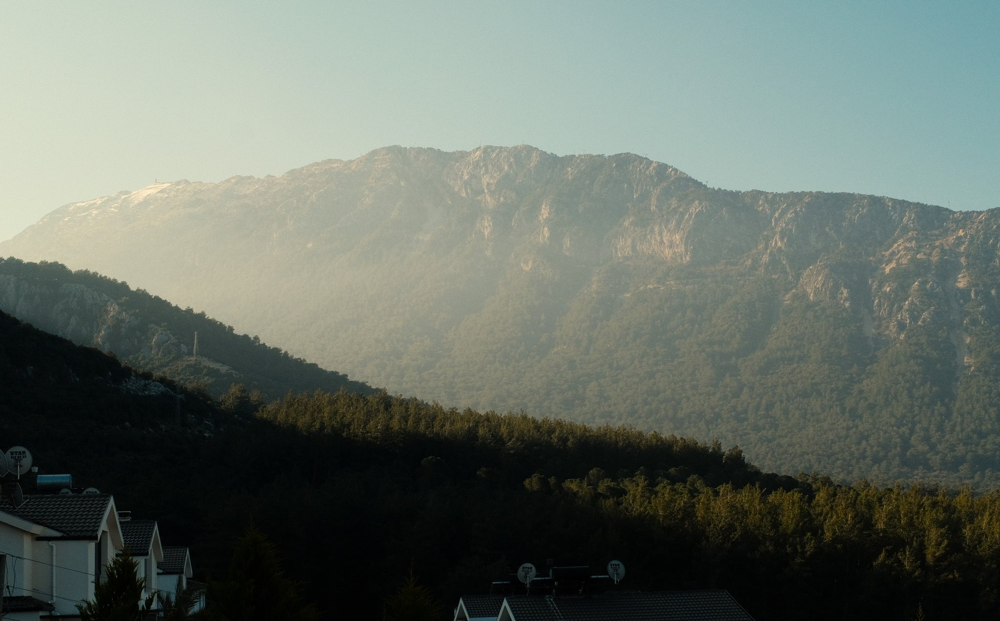
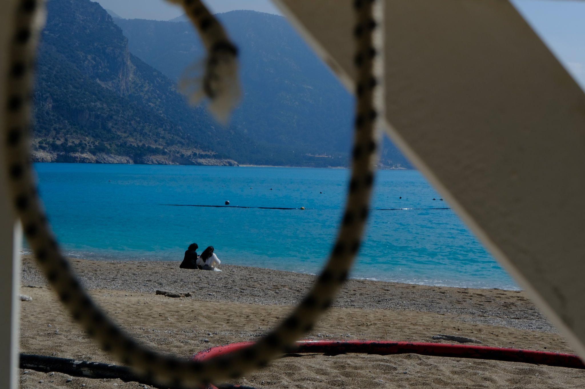
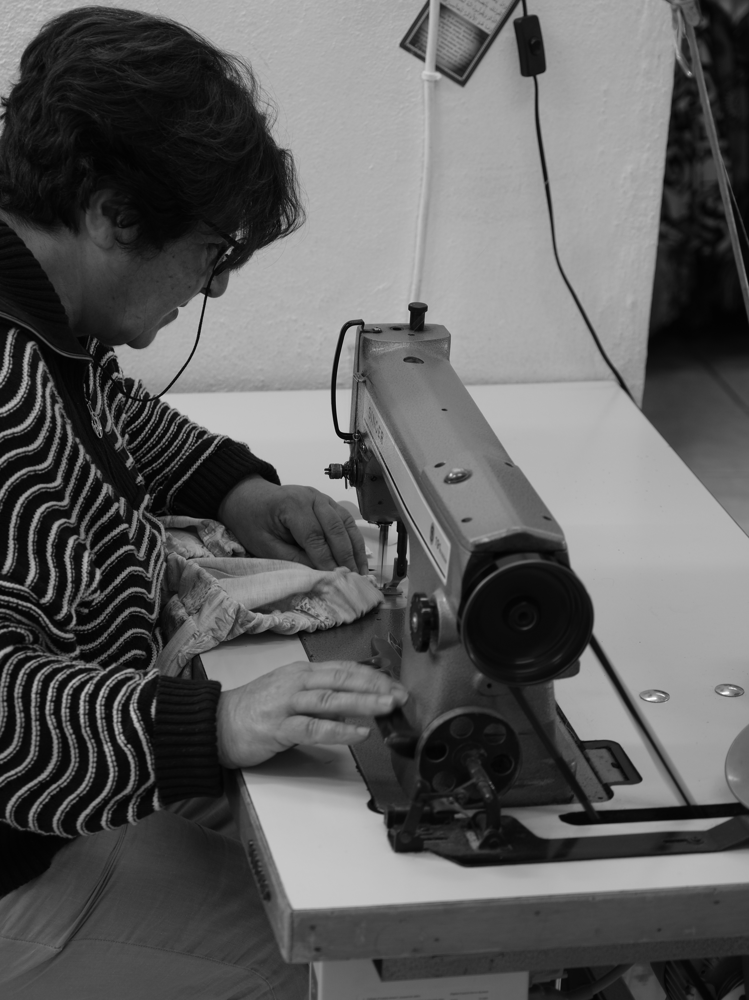

March 2026
Bodrum, Türkiye
White hillside towns and Aegean horizons, observed through small everyday moments.







White hillside towns and Aegean horizons, observed through small everyday moments.


